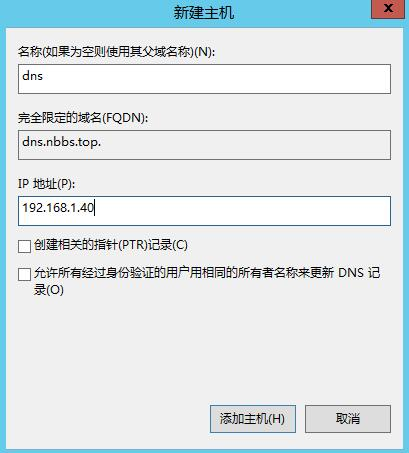
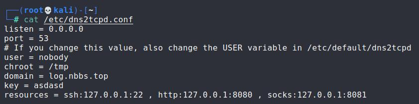

简介
dns隧道是使用了dns查询的dns数据包来构建隧道，dns查询走53端口，正常是发送请求查询域名，dns服务器返回查询结果，如果我们控制一台dns服务器，利用解析请求和服务器返回结果这一去一回就可以构建一条dns隧道
环境
一共三台机器一台防火墙，win2012上配置了dns服务器，解析nbbs.top域，有一条log.nbbs.top的ns记录指向kali 1，实验分别用dns2tcp和iodine两种工具进行演示
流程
dns2tcp
首先来配置dns服务器，windows 2012通过添加功能安装dns服务器，然后进入dns管理器，在正向查找上右键创建新区域，根据提示一路下一步创建nbbs.top
在域上右键创建新委派，也就是子域名
创建log.nbbs.top子域，并将权威dns服务器指向dns.nbbs.top
然后右键nbbs.top域创建一条A记录
将dns.nbbs.top指向192.168.1.40

然后配置dns转发器，转发器会将dns服务器解析不了的域名发给我们指定的dns服务器，右键服务器名，属性里的转发器，我添加了一条指向114.114.114.114的记录，只要是能用的dns服务器都行，本地网关也可以，同时我在网络设置里把window2012的dns也指向了自己127.0.0.1，这个Windows2012在真实环境里其实担任了网关和公网dns两个角色
配置完dns服务器就可以准备隧道了，dns2tcp分为服务器端dns2tcpd和客户端dns2tcpc，dns2tcpd使用一个配置文件进行配置，/etc/dns2tcpd.conf，dns2tcp服务器端可以设置提供多种服务，并且分别转发到指定地址，客户端的连接必须指定使用的服务，一个客户端连接只能使用一种服务，多个服务就需要创建多个连接

listen = 0.0.0.0
监听IP，127.0.0.1监听本地，公网IP192.168.1.40监听这个IP的网络请求，0.0.0.0接受所有IP请求
port = 53
端口
# If you change this value, also change the USER variable in /etc/default/dns2tcpd
user = nobody
chroot = /tmp
domain = log.nbbs.top
域名
key = asdasd
预设的密码
resources = ssh:127.0.0.1:22 , http:127.0.0.1:8080 , socks:127.0.0.1:8081
提供的服务及转发地址配置好后启动服务器端
-F 显示详细信息
-d 详细等级一共1，2，3三级
-f 指定配置文件
启动了服务器端客户端就可以连接了
-c 压缩传输数据
-k 密码
-d 详细信息，也是三级
-l 本地监听端口
-r 使用服务器端提供的ssh服务
-z 域名
ssh连接本地7001端口就连上了192.168.1.40shell
iodine
这个工具和dns2tcp类似，特点是会在本地创建一块虚拟网卡，iodined命令启动服务器端，-f指定虚拟网卡的IP，然后加域名，服务器端就启动了，需要注意虚拟网卡的IP网段不能和服务器端机器和客户端机器的的真实IP网段相同，需要一个独立的网段
可以看见服务器端已经多了一块IP是10.0.0.1的网卡

客户端连接也很简单，可以用-f 指定dns服务器，也可以不指定，使用本机默认的dns服务器，再加上使用的域名，隧道就连上了
可以看见客户端也有一块10.0.0.2的网卡，客户端的网卡IP是会根据服务器端自动获取的，现在隧道两端的机器已经实现了物理连接一样，可以直接通过IP访问，要是想代理上网可以再嵌套一条ssh的动态访问隧道
流量分析
筛选dns数据包，有大量长度为83和108的数据包，这些都是隧道的心跳数据包，每半秒一次
除去心跳，剩下的除了头四个是真的dns数据包，接下来的都是隧道的数据包，从auth这个子域名可以猜出头四个是认证的数据包，通过密码进行身份确认，加下来俩connect是请求建立连接
对比请求包和返回包可以看见内容都是加密的，那一串特备长的子域名就是传给服务器端的信息，TXT记录的内容就是返回信息，dns2tcp的服务器端选用的是TXT记录，可以传输更多信息
从服务器端抓到的包可以看出，dns解析都是Windows 2012那台dns服务器向他发起的，说明隧道客户端并没有解析出log.nbbs.top的ns记录然后直接和服务器端通信，dns都是发给windows2012的，由windows2012向服务器端进行dns的解析
对比服务器端和客户端抓到的包就可以发现两边的包一模一样，只是有个别在数据包顺序上不同，说明windows2012只是进行了单纯的中间人的角色